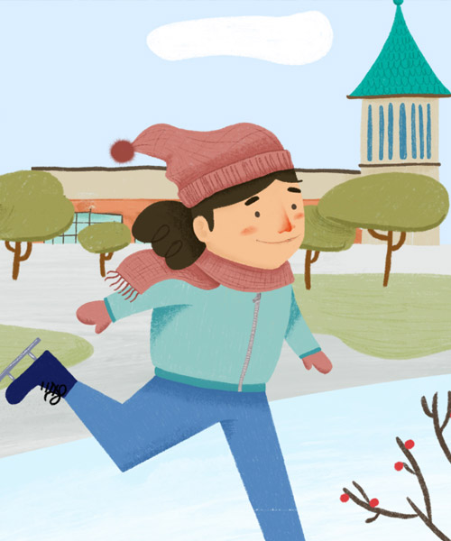
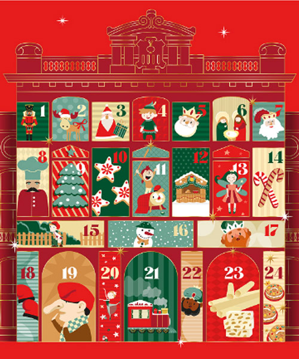
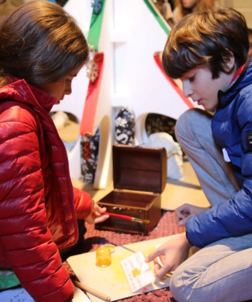
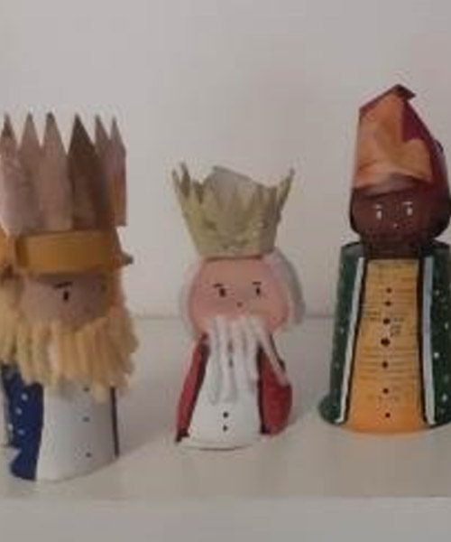
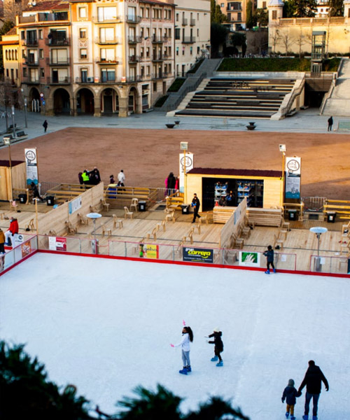
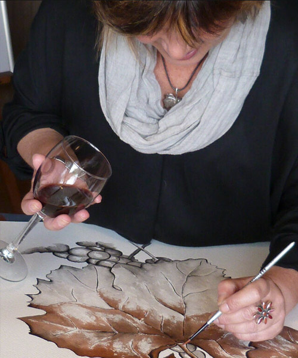
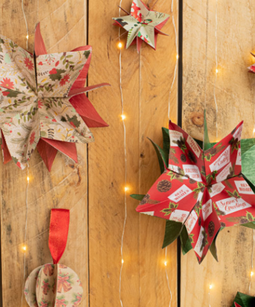

Actividades en familia
En Navidad, los pueblos de la provincia de Barcelona ofrecen actividades familiares únicas, pensadas para hacer disfrutar y compartir a los mayores y a los más pequeños. En esta recopilación de propuestas que ofrecemos podrá encontrar desde talleres creativos de pesebres y duendes, hasta juegos de pistas y recorridos inimaginables


Una experiencia perfecta para toda la familia, con actividades navideñas, ambientaciones especiales y las réplicas de los edificios y lugares más emblemáticos de Catalunya. Disfruta de un recorrido único por las maquetas con un toque navideño, talleres creativos para los más pequeños, música festiva y la visita de Papá Noel.

En los Jardinets del Espai Cultura de Sabadell puede experimentar el uso de una pista de patinaje sintética, totalmente ecológica y sostenible. Con patines de aguja, disfrutará de la experiencia de deslizarse en un entorno único, rodeado de naturaleza y tranquilidad.

En la plaza del Dr. Robert, el Calendari d'Advent le invita a seguir cada día las aventuras de sus personajes. La malvada Bruja del Carbón intentará robar las cartas a los Reyes, pero el espíritu navideño siempre triunfa. Un espectáculo lleno de emoción, diversión y sonrisas para toda la familia.

Món Sant Benet acoge la Operación Reyes Magos, una actividad familiar que combina un juego de pistas por el monasterio para encontrar la llave mágica y un taller para hacer barquillos, su dulce preferido. Según la leyenda, hace más de mil años, los Reyes confiaron esa llave al abad, pero ahora ha desaparecido.

Firamagic llega al Nou Parc Central con una propuesta llena de magia y diversión para toda la familia. Durante la temporada navideña, pequeños y mayores podrán disfrutar de actividades, espectáculos y momentos mágicos en un entorno único. Un espacio ideal para vivir el espíritu de Navidad con ilusión y fantasía.

¡Convierte materiales cotidianos en una figura de pesebre única y sostenible! En el taller de figuritas de Belén, con tapones, rollos, botellas y otros materiales reciclados, darás vida a un personaje de Navidad personalizado con tu imagen. Una actividad creativa y divertida para niños a partir de 5 años.

Un taller mágico donde se pueden crear duendes navideños con lanas de colores y materiales reciclados. Estos personajes son perfectos para colgar en el árbol o para regalar. ¡Con la ayuda de una colaboradora del museo, cada niño dará vida a su duende! No olvide llevar un tubo de papel higiénico para reciclar.

Badanadal es uno de los parques de Navidad más completos de Catalunya. Las pistas de hielo y el tobogán gigante para bajar con donuts son las grandes atracciones. Aunque este año el Mercat de Nadal añade un toque especial.

Pasea por el bosque y conoce a la Fada Garlanda, la oficina de correo navideño, la cocina de las golosinas, el planetario de las ilusiones e incluso ¡la mina de carbón! Un recorrido exterior y circular, donde podrás admirar las luces, tomar fotos, disfrutar de la oferta gastronómica e interactuar con los seres que habitan en el bosque.

El Màgic Pol organiza un campus de magia en el Museu de l'Aigua i el Tèxtil. Una experiencia para aprender trucos que dejarán a todos boquiabiertos. Cada taller es una nueva aventura, con secretos e ilusiones por compartir en familia.

Crea un farolillo para recibir a los Reyes y elementos decorativos para hacer su estancia más agradable. Talleres de pintura con vino (sin alcohol) y aceite de oliva para toda la familia. ¡Una actividad creativa para disfrutar juntos de la Navidad!

¡Este año, el tió de la Culla se ha perdido y necesita tu ayuda! Para devolverlo a casa, habrá que seguirle el rastro por el jardín, las tinas, la prensa... Con buena orientación y una linterna, podrás ayudarle a encontrarlo ¡Un divertido juego de pistas para toda la familia!

¡Da vida a la Navidad con papel! En el Taller del Bosc aprenderemos a transformar hojas de scrap en preciosas bolas y estrellas para decorar tu casa. Un espacio para dejar volar la creatividad y decorar con magia navideña. ¡Comparte tu obra de arte en las redes y llena la Navidad de inspiración!

¡Prepara la mesa para las fiestas con mantel y servilletas únicas! Participa en este taller de estampación donde decorarás prendas de algodón con motivos navideños. Lleva tus manteles o servilletas y conviértelos en una pieza original para sorprender a los invitados.

Disfruta de una mañana llena de sabores y diversión con este taller de cocina pensado para familias. Aprenderás a preparar recetas navideñas sencillas y deliciosas, ideales para compartir durante las fiestas. Los más pequeños podrán ponerse el delantal y cocinarlos en equipo.